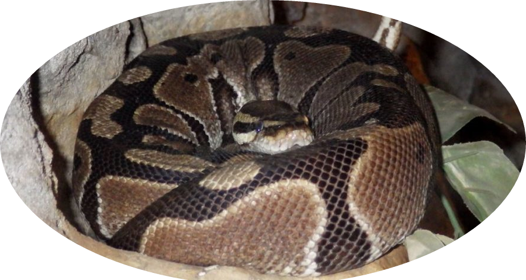

Why I deserve a NopeRope
NopeRope Care
This part consists of 5 key subjects:
There are 5 Primary snake species that are currently popular
with beginners, those species are:
With the Enclosures avaiable you can't go wrong,
most pet stores have standart reptile tanks available
and can help you with the creation of your snake habitat
there are certain snakes that need a higher humidity,
certain snakes that are shy from nature that need
more hiding spots and certain snakes that like to bath.